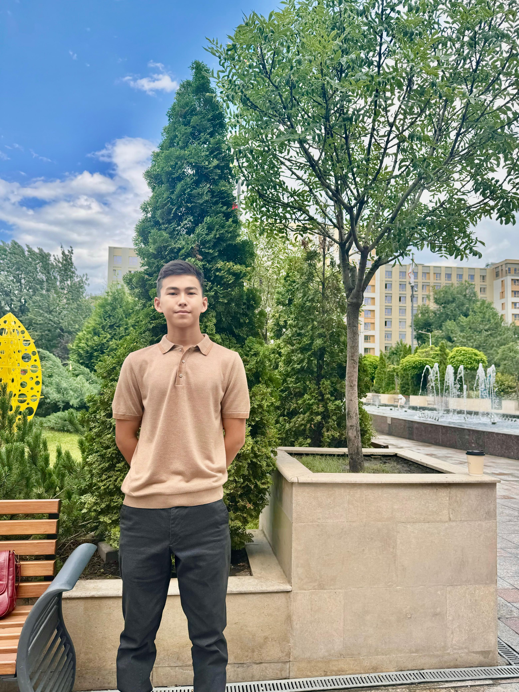

Менің атым - Айнабек Өмірбек. 16 жастамын. Қазіргі уақытта Республикалық физика-математика мектебінде (РФМШ) 10-сыныпта оқимын. Жүзгенді, жаттыққанды және алға қойған мақсатыма жетуді жақсы көремін😄

• Білімдегі жетістіктерім: Ауыл мектептеріне арналған олимпиаданың республикалық кезеңінде математика пәнінен 1 орын алып осы мектепке грант алдым, бірнеше облыстық деңгейдегі олимпиадаларда жүлделі орынға ие болдым. Және де қазіргі таңда ауыл мектептері оқушылары арасында танымалдылыққа ие болып жатқан IQanat High School of Burabay мектебінің ұйымдастырған жарысында жеңіп, сол мектепке толық грант жеңіп алдым.
• Спорттағы жетістіктерім: Бокспен айналысып, облыстан 2 орын және де бірнеше аудандық жарыстардан жүлделі орын алдым.
Мен қаржы және бизнес саласына қызығамын. Бұл мамандық маған математикалық логика, стратегиялық ойлау, инвестицияларды дұрыс басқару сияқты дағдыларды дамытуға мүмкіндік береді.
Қаржы саласы – әлемдегі ең перспективті бағыттардың бірі. Бизнес пен инвестиция арқылы жаңа жұмыс орындарын ашып, экономиканы дамытуға болады. Бұл мамандықта мен аналитикалық қабілетімді дамытып, қаржы нарығындағы өзгерістерді түсінуді үйренемін.
Менің бұл мамандықты таңдаудағы мақсатым – үлкен қаржылық жобалармен жұмыс жасап, Қазақстан экономикасына үлес қосу. Сондай-ақ, қаржылық сауаттылықты арттырып, адамдарға инвестиция жасау мәдениетін үйрету.
Мен тарихта әлемге әлемдік деңгейдігі жаңа өзгерістер әкеліп, адамзаттың өмір сүру деңгейін жақсартып, саясаттағы қателіктерді түзеуге қауқарлы, халқының алғысына бөленген адам ретінде қалғым келеді.